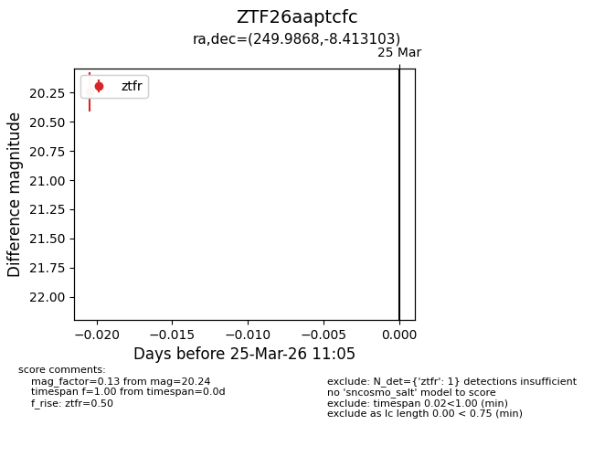
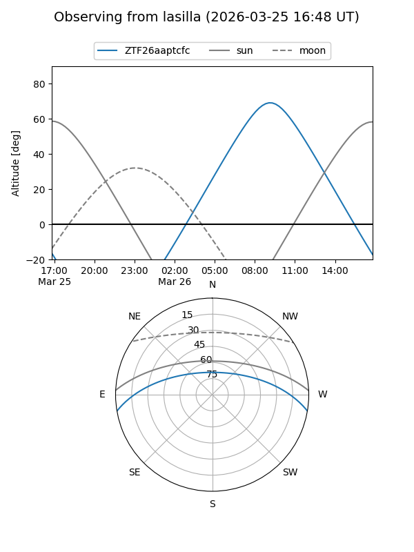
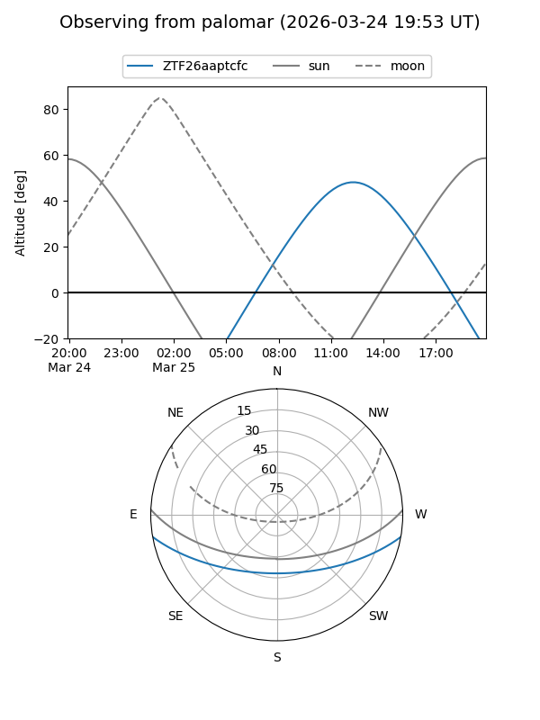

ZTF26aaptcfc
Target ZTF26aaptcfc at 2026-03-25 11:08
Aliases and brokers:
FINK: link
Lasair: link
ALeRCE: link
alt names
ZTF26aaptcfc (ztf,fink_ztf)
Coordinates:
equatorial (ra, dec) = 249.9868,-8.41310
equatorial (HMS+DMS) = 16:39:56.84,-08:24:47.17
galactic (l, b) = (8.6373,+24.27703)
Flags:
Photometry:
last ztfr=20.24
1 ztfr detections
Lightcurve

Visibility


Additional plots